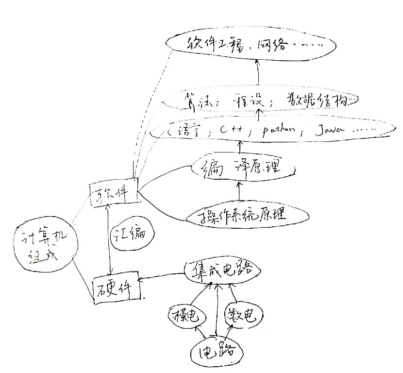

现如今，几乎所有科目的学习都要用到计算机，都要学习计算机的使用，但是计算机所学内容和其他科目有着本质上的不同。
对于其他科目，虽然使用计算机的能力要求千差万别，但都不外乎使用他人已经完善好的程序，去辅助自己专业的研究创新，也就是说，更加偏向让计算机服务于人。但是计算机专业更加偏重于研究更基础的东西，从硬件的基础原理到最终的集成，从系统到上层的软件，涵盖面十分广泛，是一种更加偏向于机器的学问。因此就，计算机作为一个比较基础的应用学科，在当今时代有着很重要的作用。
认真学习，以兴趣为动力，选择自己喜欢的方向，争取上研究生，做出属于自己的成就。